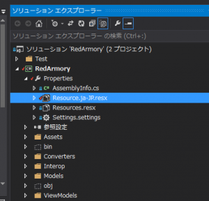

WPF のプロジェクトで多言語化しているとき、Resources.xx-XX.resx みたいなファイルを追加したときの話。
通常は、プロジェクトファイルの下の Properties ノードに追加していきますが (直接は追加できないので、一度別ノードに追加してから移動)、その際、下の画像のようにリソースファイル名の名前を間違えると、

1 | public void ChangeCulture(string name) |
上のソースが無意味になります。
名前はきちんと Resources.ja-JP.resx のようにしましょう。
これに気づかず1時間くらい時間を無駄にしました。